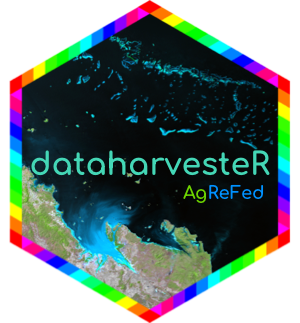

dataharvester is an R interface to the AgReFed Data Harvester. Use dataharvester to preprocess, aggregate, visualise and download geospatial data from a range of Australian and international data sources, including:
- Soil and Landscape Grid of Australia (SLGA)
- SILO Climate Database
- Digital Elevation Model (DEM) of Australia
- Digital Earth Australia (DEA) Geoscience Earth Observations
- GSKY Data Server for DEA Geoscience Earth Observations
- Google Earth Engine
With connectivity to the Earth Engine API, perform petabyte-scale operations which include temporal cloud/shadow masking and automatic calculation of spectral indices (e.g. NDVI) for the following collections:
- Landsat 5 (TM), 7 (ETM+), 8 (OLI/TRS) and 9 (OLI-2/TRS-2)
- Sentinel-2 (Surface Reflectance) and Sentinel-3 (Ocean and Land Colour Instrument)
- MODIS (or Moderate Resolution Imaging Spectroradiometer) products
For all other Earth Engine collections, while dataharvester does not provide officual support, users can still perform basic operations to filter, reduce, visualise and download data.
Installation
Important: dataharvester is currently still under early development. Do not download this package unless you are a developer and love to break things.
Install the development version of this package from GitHub using install_github() from remotes or devtools:
# install.packages("remotes") # uncomment and run this line if necessary
remotes::install_github("sydney-informatics-hub/dataharvester")
library(dataharvester) # load packageExamples
“Headless” run
Run initialise_harvester() after loading the package. The function helps you initialise the package, verifies package dependencies and connect to the Earth Engine API.
library(dataharvester)
initialise_harvester(earthengine = FALSE)Then, run harvest(), which parses a YAML config file:
harvest("path/to/config.yaml")Acknowledgments
Acknowledgements are an important way for us to demonstrate the value we bring to your research. Your research outcomes are vital for ongoing funding of the Sydney Informatics Hub. If you make use of this software for your research project, please include the following acknowledgement:
“This research was supported by the Sydney Informatics Hub, a Core Research Facility of the University of Sydney, and the Agricultural Research Federation (AgReFed).”
This software was developed by the Sydney Informatics Hub, a core research facility of the University of Sydney, as part of the Data Harvesting project for the Agricultural Research Federation (AgReFed). AgReFed is supported by the Australian Research Data Commons (ARDC) and the Australian Government through the National Collaborative Research Infrastructure Strategy (NCRIS).
We would also like to acknowledge the use of the following Python packages in dataharvester: